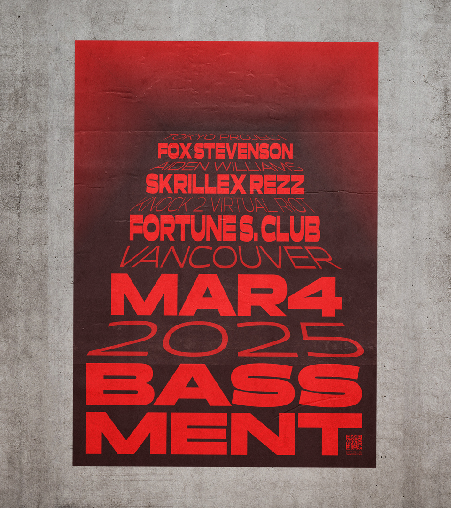
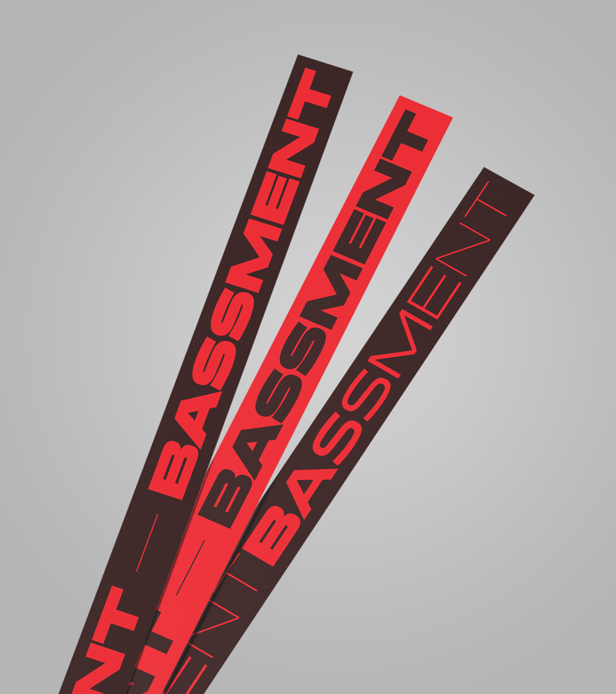
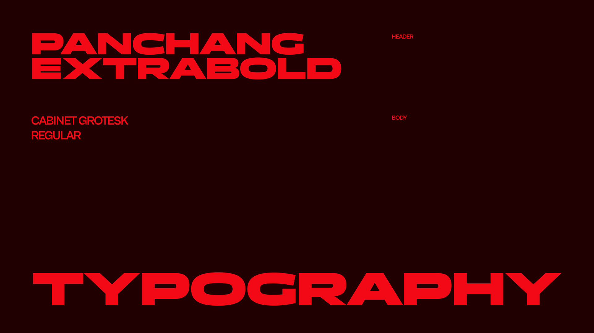
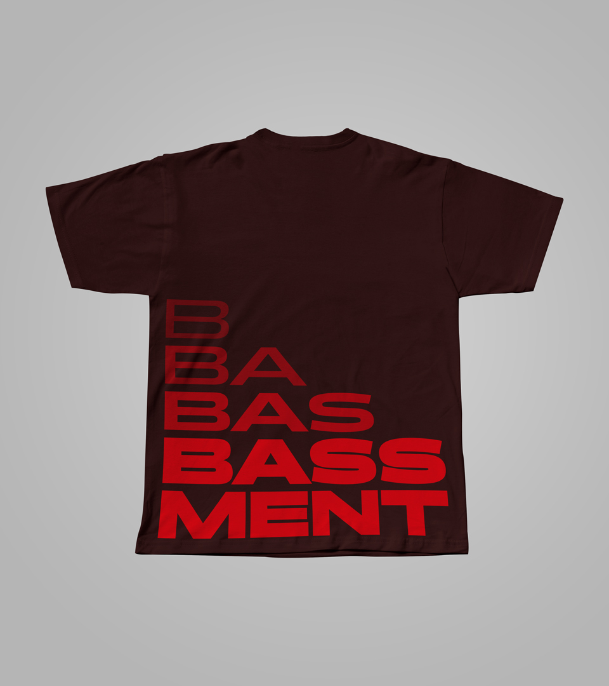
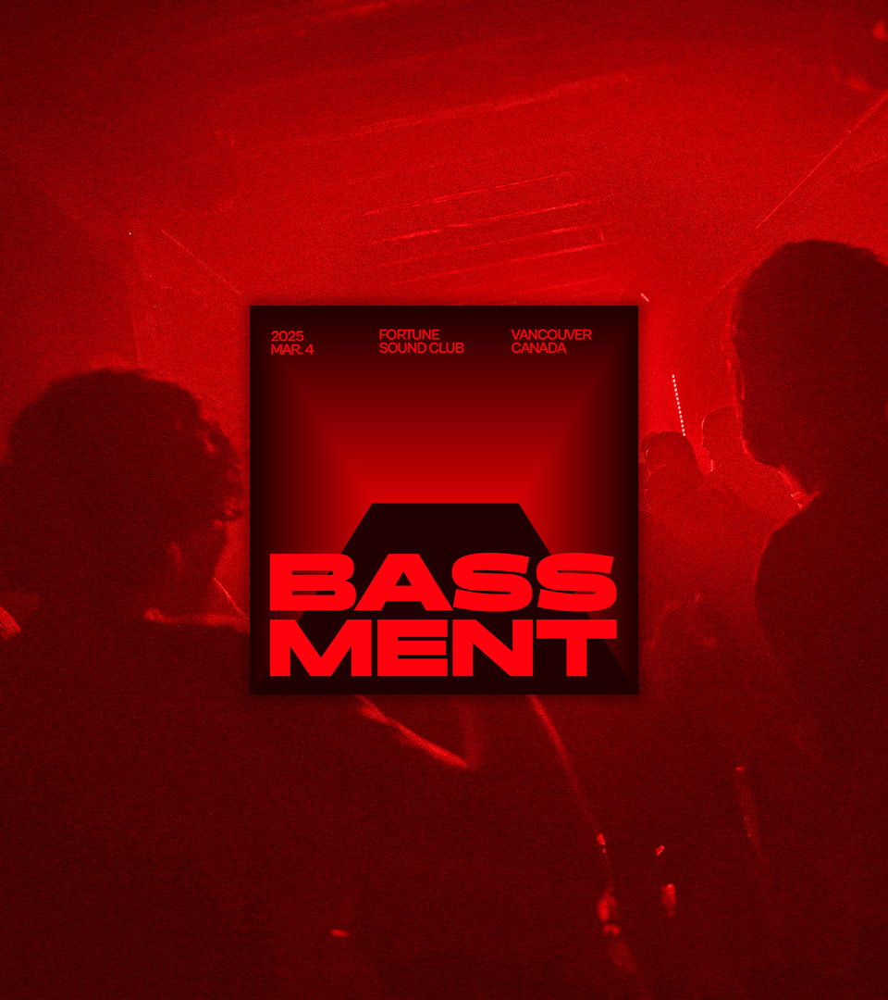
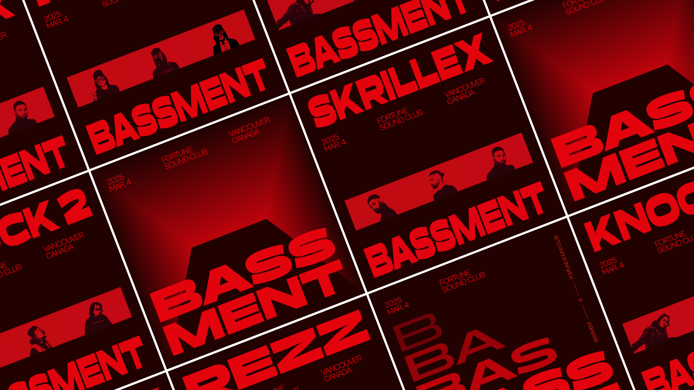

Bassment
Bassment is a bass-focused EDM event showcasing genres like: future bass, bass house, and other bass-heavy styles. It takes place at underground club venues for adults looking to jam out and dance.


The final poster creates a staircase out of the event details, leading you down into the Bassment. The reading hierarchy is reversed to reinforce the flow of the eyes beginning at the top of the staircase, to the bottom.



